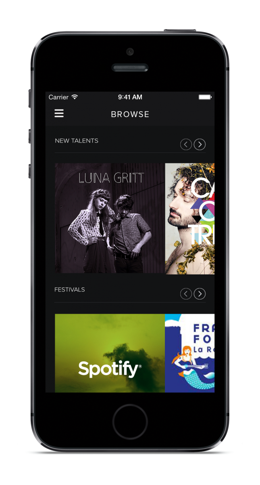
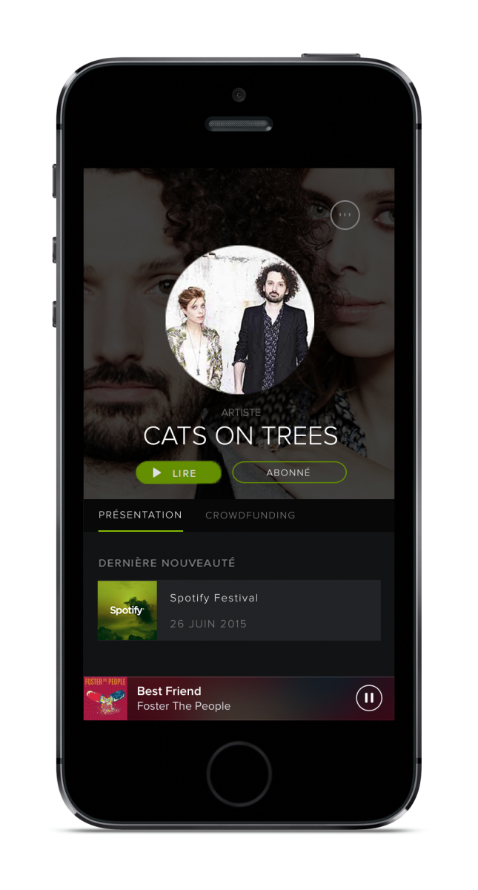

Introduction
Aujourd’hui, beaucoup de personnes écoutent de la musique en streaming. Cependant sur le marché musical, la musique physique
(CD, Single) génère deux fois plus de revenus que la musique numérique (Itunes, Amazon).
Les personnes apprécient la musique
en streaming mais préfèrent tout de même l’acheter physiquement pour garder une trace de leurs artistes préférés. Il est
donc intéressant d’apprivoiser cet intérêt pour le streaming musical pour inciter l’utilisateur à suivre de nouveaux talents
musicaux émergents. Il faut donc créer un lien entre les différents acteurs de l’industrie musicale : les consommateurs,
les artistes-musiciens, les labels et les producteurs.
Proposition
Le concept donc est réparti en trois points : identifier et financer les artistes en utilisant le crowdfunding; promouvoir ces artistes grâce aux fonds récoltés pour organiser des concerts physiques; proposer aux utilisateurs de suivre ou d’aller à des festivals, qui seront en partenariats avec Spotify.

Une idée de Panorama
Ce projet était une idée de Panoramas, un festival de musique électro/rock/hip-hop. Il a été créé par une bande d'amis, dont notre processeur de sémantique en faisait partie. Il nous a donc proposé le sujet avec l'aide de notre professeur de webdesign. Il s'agissait donc d'incorporer le festival Panoramas dans Spotify, pour communiquer au plus grand nombre de personnes possible.
 